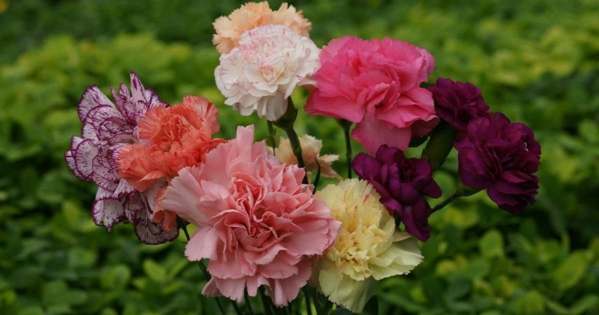
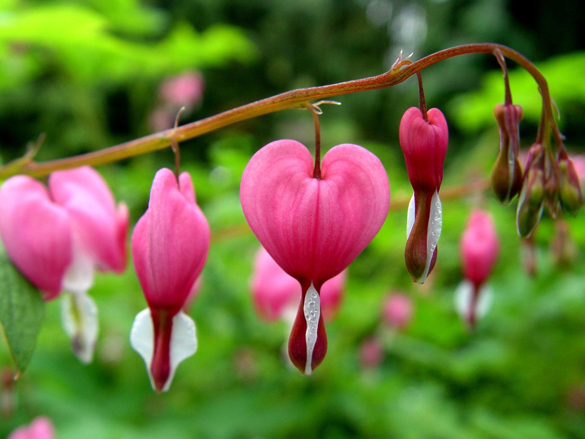
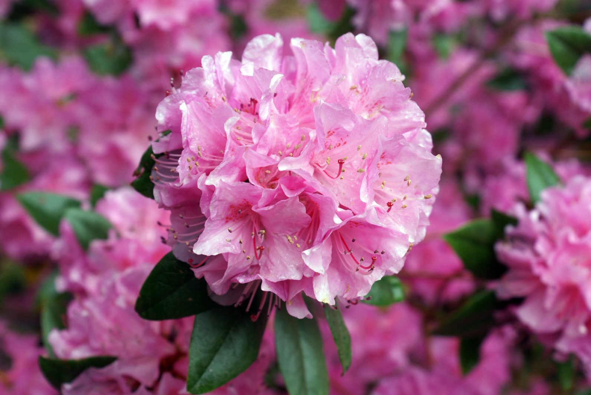

Las flores más exportadas en COLOMBIA
Rosas

Algunas simplemente son para expresar el cariño de amistad y otras como las rosas rojas son para decirle a esa persona que te gusta. ... Una Rosa blanca, expresa la pureza y la inocencia de quien queremos dársela. Es perfecta para regalarla a una adolecente.
Claveles
El clavel representa el 15% de las exportaciones de flores en Colombia. Existen alrededor de 100 tonalidades. Es una flor moderna, con una gran variedad de texturas y coloridos. La palabra latina para clavel es "Dianthus", que significa "flor de los dioses".
Hortensias
SIGNIFICADO DE LAS HORTENSIAS La hortensia es una flor cargada de simbolismo. Son símbolo de gratitud, de gracia, de belleza y también de abundancia, debido a la cantidad exuberante de flores y a su forma redonda tan generosa.
Lirios
Debido a su amplia variedad de colores, podemos encontrar significados diferentes: Lirios blancos: pureza, inocencia y belleza. Lirios amarillos: felicidad en el amor, gratitud y alegría. Lirios rojos: amor, seducción.
Información floral

Begonias
Las begonias cuentan con una gran variedad de ejemplares. Las hojas de esta planta tienen forma de haz, mientras que sus flores suelen...
más información

Belladonas
Estas flores presentan una gran toxicidad, pero regaladas trasmiten sinceridad. Los usos de esta planta, debido a sus propiedades, son..
más información
campanillas
Las campanillas son originarias de Transilvania y también de la zona de los Montes Cárpatos, por ello también se les conoce como Farolillo...
más información
Claveles
Los claveles son hermosas flores que forman parte de la familia de las Caryophyllaceae. El origen de estas flores lo encontramos en tierras...
más información

Claveles chinos
Te ofrecemos toda la información que estás buscando sobre los claveles chinos.
más información

Corazón de María
La Dicentra spectabilis recibe muchos nombres (muchos de ellos sorprendentes) debido al aspecto de sus flores, que se asemejan a un corazón...

Azaleas
Las azaleas pertenecen a la familia de las Ericáceas. sus hermosas flores con forma de campana se presentan en abundantes racimos. Podemos...

Azucenas
Las flores de las azucenas son pertenecientes a la familia de las Liliáceas. Estas hermosas flores son originarias del Mediterráneo...